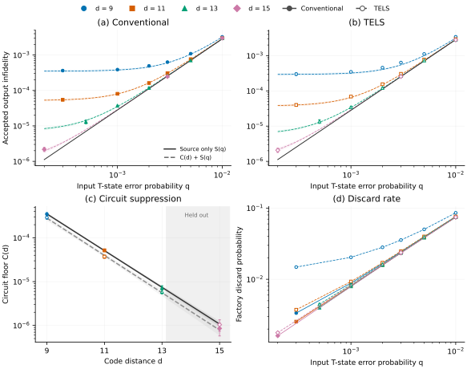

8T-1CCZ Distillation Factory¶
This tutorial compiles two 8T-1CCZ factory layouts and compares their simulated outputs. Each factory consumes eight T states to prepare a three-qubit CCZ state.
Load and compile the layouts¶
Layout |
Gallery entry |
Purpose |
|---|---|---|
Conventional |
|
Baseline lattice-surgery factory |
TELS |
|
Temporally encoded lattice-surgery variant |
import bloq
factories = {
"non-tels": bloq.GalleryItem.CCZ_4X3X6,
"tels": bloq.GalleryItem.CCZ_4X3X7_TELS,
}
for name, entry in factories.items():
graph = entry.load()
graph.save(f"{name}.blog")
program = bloq.compile(graph, distance=3)
program.save(f"{name}.bloqir")
Layout |
Rounds per lattice-surgery measurement |
Postselection |
|---|---|---|
Conventional |
\(d\) |
Reject odd final X-type parity |
TELS |
\(\lceil2d/3\rceil\) |
Also check an even-parity relation among five Z-type readouts, replacing four independent readouts |
Error Contribution¶
The factory has two error sources: independent logical Z errors of probability \(q\) on its eight T-source proxies, and physical circuit noise of strength \(p\). Measure accepted-output infidelity relative to \(\mathrm{CCZ}|+++\rangle\).
flowchart LR A["8 T-source proxies: Z errors with probability q"] --> B["Factory: physical noise p"] B --> C["Postselection: accepted CCZ output"]
Run |
Parameters |
Measures |
|---|---|---|
Circuit-only |
\(p>0\), \(q=0\) |
Circuit error \(C(d)\) with perfect T inputs |
Source-only |
\(p=0\), \(q>0\) |
Output error \(S(q)\) from faulty T inputs |
Mixed |
\(p>0\), \(q>0\) |
Combined error, including interactions |
With \(p=0\), single input faults are rejected, but pairs can cause output errors. The \(\binom{8}{2}=28\) pairs give \(S(q)\approx28q^2\) for small \(q\).
The ideal model accepts even numbers of faulty inputs. Its acceptance \(g_s(q)\) and accepted-output infidelity \(S(q)\) are
Compare the mixed results with \(C(d)+S(q)\). This approximation can miss interactions between source and circuit errors.
Simulation¶
The script samples all sixteen measurement paths and uses offline decoding and postselection to score both factories.
Download the script and
the circuit bundle
into the same directory. Use Python 3.12 or newer:
uv add "clifft==0.6.0" "pymatching>=2.4,<3" "stim>=1.16,<2"
uv run python tutorial_ccz_simulation.py
The bundled circuits use distance 9 and \(p=0.001\). The default samples 1,000
attempts per path. Increase --shots to resolve rare errors, and use --q to
select T-source error probabilities. Counts and results are saved to
ccz-results.jsonl.
"""Simulate both CCZ factories from the bundled physical circuits."""
import argparse
import hashlib
import json
import math
import re
from pathlib import Path
from zipfile import ZipFile
import clifft
import numpy as np
import pymatching
import stim
BUNDLE_SHA256 = "3f123f70314189c8fb8e9860a8ad1ba9c3996bd6d6a77d11392938582250fa0e"
def parity(rows, columns):
return np.bitwise_xor.reduce(rows[:, columns].astype(np.uint8), axis=1)
def score(sample, corrections, spec, manifest):
frames = [np.column_stack([
parity(sample.measurements, records[axis]) ^ int(signs[axis])
^ parity(corrections, observables[axis])
for records, signs, observables in zip(
spec["frame_measurements"], spec["frame_signs"],
spec["frame_observables"], strict=True)
]) for axis in [0, 1]]
values = sample.exp_vals * np.asarray(spec["probe_signs"])
for column, label in enumerate(manifest["probe_labels"]):
flip = np.zeros(len(values), dtype=np.uint8)
for output, axis in enumerate(label):
if axis in "YZ":
flip ^= frames[0][:, output]
if axis in "XY":
flip ^= frames[1][:, output]
values[:, column] *= 1 - 2 * flip.astype(np.int8)
errors = 1 - (1 + values @ np.asarray(manifest["probe_ideal_coefficients"])) / 8
if not np.all(np.isfinite(errors)) or np.any((errors < -1e-6) | (errors > 1 + 1e-6)):
raise ValueError("output probes yielded invalid infidelity")
exact = np.rint(errors * 8) / 8
if not np.allclose(errors, exact, atol=1e-6, rtol=0):
raise ValueError("output probes left the exact eighth alphabet")
return exact
def bounded_interval(mean, shots):
# Union over both tails of error and acceptance means: 95% coverage.
radius = math.log(4 / 0.05) / shots
def divergence(value):
if value <= 0:
return 0 if mean == 0 else math.inf
if value >= 1:
return 0 if mean == 1 else math.inf
return ((mean * math.log(mean / value) if mean else 0)
+ ((1 - mean) * math.log((1 - mean) / (1 - value)) if mean < 1 else 0))
bounds = []
for lower, upper, left_tail in [(0, mean, True), (mean, 1, False)]:
for _ in range(60):
middle = (lower + upper) / 2
if (divergence(middle) > radius) == left_tail:
lower = middle
else:
upper = middle
bounds.append(upper if left_tail else lower)
return bounds
def simulate(archive, factory, distance, q, shots):
directory = f"{factory}-d{distance}/"
manifest = json.loads(archive.read(directory + "manifest.json"))
if manifest["schema"] != 7 or set(manifest["paths"]) != {f"{i:04b}" for i in range(16)}:
raise ValueError("circuit metadata must cover all sixteen paths")
def read(name):
payload = archive.read(directory + name)
if hashlib.sha256(payload).hexdigest() != manifest["files"][name]:
raise ValueError(f"circuit hash mismatch: {name}")
return payload
strata = []
for path, spec in sorted(manifest["paths"].items()):
physical = read(spec["physical_file"]).decode("ascii")
physical, count = re.subn(
r"(?m)^(?:E|Z_ERROR)\(0\.125\)(?= (?:Z)?\d+(?: (?:Z)?\d+)*$)",
f"Z_ERROR({q:.17g})", physical)
if count != 8:
raise ValueError("expected eight independent logical T-source errors")
program = clifft.compile(physical, hir_passes=None, bytecode_passes=None)
companion = stim.Circuit(read(spec["decoder_file"]).decode("ascii"))
converter = companion.compile_m2d_converter()
matching = pymatching.Matching.from_detector_error_model(
companion.detector_error_model(decompose_errors=True))
matched, accepted, total, square = 0, 0, 0.0, 0.0
for start in range(0, shots, 1024):
batch = min(1024, shots - start)
identity = f"7:{directory}:{q:.17g}:{path}:{start}".encode("ascii")
seed = int.from_bytes(hashlib.sha256(identity).digest()[:8], "little")
sample = clifft.sample_survivors(program, shots=batch, seed=seed, keep_records=True)
assert sample.total_shots == batch and sample.discards == 0
assert len(sample.measurements) == batch
virtual = np.zeros((batch, spec["virtual_measurements"]), dtype=bool)
for target, source, length in spec["virtual_ranges"]:
virtual[:, target:target + length] = sample.measurements[:, source:source + length]
events = converter.convert(measurements=virtual, separate_observables=False)
corrections = matching.decode_batch(events)
conditions = np.column_stack([
parity(sample.measurements, records) ^ int(sign) ^ parity(corrections, observables)
for records, sign, observables in zip(
spec["selector_measurements"], spec["selector_signs"],
spec["condition_corrections"], strict=True)
])
columns = {value: index for index, value in enumerate(manifest["condition_observables"])}
selectors = conditions[:, [columns[value] for value in manifest["selector_observables"]]]
choices = np.column_stack([
parity(selectors, equation) ^ 1 for equation in manifest["selector_equations"]])
match = np.all(choices == np.asarray(spec["pins"]), axis=1)
discard = np.any(np.column_stack([
parity(conditions, [columns[value] for value in equation])
for equation in manifest["discard_equations"]]), axis=1)
errors = score(sample, corrections, spec, manifest)[match & ~discard]
matched += np.count_nonzero(match)
accepted += len(errors)
total += errors.sum()
square += np.square(errors).sum()
strata.append(dict(path=path, attempts=shots, matched=int(matched), accepted=accepted,
infidelity_sum=float(total), infidelity_sq_sum=float(square)))
accepted = sum(row["accepted"] for row in strata)
matched = sum(row["matched"] for row in strata)
total = sum(row["infidelity_sum"] for row in strata)
if not accepted:
raise ValueError("no accepted outputs; increase --shots")
raw_shots = 16 * shots
low_x, high_x = bounded_interval(total / raw_shots, raw_shots)
low_a, high_a = bounded_interval(accepted / raw_shots, raw_shots)
interval = [low_x / high_a, min(1, high_x / low_a) if low_a else 1]
return dict(factory=factory, distance=distance, physical_error_probability=0.001,
t_infidelity=q, raw_shots=raw_shots, factory_acceptance=accepted / matched,
infidelity=total / accepted, infidelity_ci95=interval, strata=strata)
def main():
parser = argparse.ArgumentParser(description=__doc__)
parser.add_argument("--circuits", type=Path, default=Path("ccz-circuits.zip"))
parser.add_argument("--q", type=float, nargs="+", default=[0, 0.001, 0.003])
parser.add_argument("--shots", type=int, default=1000, help="attempts per measurement path")
parser.add_argument("--output", type=Path, default=Path("ccz-results.jsonl"))
args = parser.parse_args()
if args.shots < 2 or any(not 0 <= q <= 1 for q in args.q):
parser.error("use at least two shots and source probabilities between zero and one")
if args.output.exists():
parser.error("choose a new --output file for another run")
with args.circuits.open("rb") as file:
if hashlib.file_digest(file, "sha256").hexdigest() != BUNDLE_SHA256:
parser.error("circuit bundle hash mismatch")
clifft.set_num_threads(1)
distance = 9
with args.output.open("x") as file, ZipFile(args.circuits) as archive:
for factory in ["non-tels", "tels"]:
for q in dict.fromkeys(args.q):
result = simulate(archive, factory, distance, q, args.shots)
file.write(json.dumps(result, allow_nan=False) + "\n")
file.flush()
print(f"{factory},d={distance},q={q:g}: "
f"acceptance={result['factory_acceptance']:.6g}, "
f"infidelity={result['infidelity']:.6g}, "
f"95% interval={result['infidelity_ci95']}", flush=True)
if __name__ == "__main__":
main()
Simulation Results¶
The plots compare factory infidelity and discard probability at \(p=0.001\). Discards exclude upstream T-state preparation failures.

The circuit-only floors below use all sixteen paths. Uncertainties are nominal pointwise 95% half-widths.
Distance |
Conventional floor |
TELS floor |
|---|---|---|
9 |
\((3.500 \pm 0.257)\times10^{-4}\) |
\((2.922 \pm 0.237)\times10^{-4}\) |
11 |
\((5.202 \pm 0.364)\times10^{-5}\) |
\((3.723 \pm 0.309)\times10^{-5}\) |
13 |
\((7.251 \pm 0.809)\times10^{-6}\) |
\((5.854 \pm 0.598)\times10^{-6}\) |
15 |
\((0.853 \pm 0.278)\times10^{-6}\) |
\((1.037 \pm 0.304)\times10^{-6}\) |